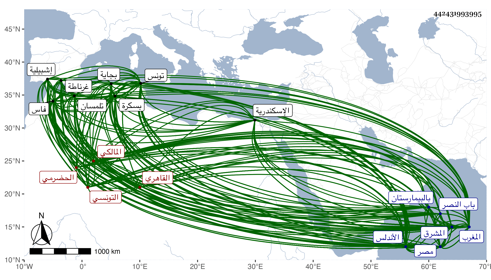

0902Sakhawi.DawLamic.ITO20230111-ara1.EIS1600.442431993995
Biography ID: 442431993995
387
عبد الرحمن بن محمد بن محمد بن محمد بن الحسن بن محمد بن جابر بن محمد ابن ابراهيم بن محمد بن عبد الرحيم ولي الدين أبو زيد الحضرمي من ولد وائل ابن حجر الاشبيلي الاصل التونسي ثم القاهري المالكي ويعرف بابن خلدون بفتح المعجمة وآخره نون. ولد في أول رمضان سنة اثنتين وثلاثين وسبعمائة بتونس وحفظ القرآن والشاطبيتين ومختصر ابن الحاجب الفرعي والتسهيل فيالنحو وتفقه بأبي عبد الله محمد بن عبد الله الحياني وأبي القسم محمد بن القصير وقرأ عليه التهذيب لأبي سعيد البراذعي وعليه تفقه وانتاب مجلس قاضي الجماعة أبي عبد الله محمد بن عبد السلام واستفاد منه وعليه وعلى أبي عبد الله الوادياشي سمع الحديث وكتب بخطه أنه سمع صحيح البخاري على أبي البركات البلقيني وبعضه بالاجازة والموطأ على ابن عبد السلام وصحيح مسلم على الوادياشي انتهى . وأخذ القراءات السبع إفرادا وجمعا بل قرأ ختمة أيضا ليعقوب عن المكتب أبي عبد الله محمد ابن سعد بن نزال الأنصاري وعرض عليه الشاطبيتين والتقصي والعربية عن والده وأبي عبد الله محمد بن العربي الحصاري وأبي عبد الله بن بحر والمقري أبي عبد الله محمد بن الشواس الزواوي وأبي عبد الله بن القصار ولازم العلاء أبا عبد الله الاشبيلي وانتفع به وكذا أخذ عن أبي محمد عبد المهيمن الحضرمي وأبي عبد الله محمد بن إبراهيم الآبلي شيخ المعقول بالمغرب وآخرين ، واعتنى بالأدب وأمور الكتابة والخط وأخذ ذلك عن أبيه وغيره ومهر في جميعه وحفظ المعلقات وحماسة الأعلم وشعر حبيب بن أوس وقطعة من شعر المتنبي وسقط الزند للمعري وتعلق بالخدم السلطانية وولي كتابة العلامة عن صاحب تونس ثم توجه في سنة ثلاث وخمسين إلى فاس فوقع بين يدي سلطانها أبي عنان ثم امتحن واعتقل نحو عامين ثم ولي كتابة السر لأبي سالم أخي أبي عنان وكذا النظر في المظالم ، ثم دخل الأندلس فقدم غرناطة في أوائل ربيع الأول سنة أربع وستين وتلقاه سلطانها ابن الأحمر عند قدومه ونظمه في أهل مجلسه ، وكان رسوله إلى عظيم الفرنج باشبيلية فعظمه وأكرمه وحمله وقام بالأمر الذي ندب إليه ، ثم توجه في سنة ست وستين إلى بجاية ففوض إليه صاحبها تدبير مملكته مدة ثم نزح إلى تلمسان باستدعاء صاحبها وأقام بوادي العرب مدة ثم توجه من بسكرة إلى فاس فنهب في الطريق ومات صاحبها قبل قدومه ومع ذلك فأقام بها قدر سنتين ، ثم توجه إلى الأندلس ثم رجع إلى تلمسان فأقام بها أربعة أعوام ، ثم ارتحل في رجب سنة ثمانين إلى تونس فأقام بها من شعبانها إلى أن استأذن في الحج فأذن له فاجتاز البحر إلى اسكندرية ، ثم قدم الديار المصرية في ذي القعدة سنة أربع وثمانين فحج ثم عاد إليها وتلقاه أهلها وأكرموه وأكثروا ملازمته والتردد إليه بل تصدر للاقراء بجامع الأزهر مدة ولازم هو الطنبغا الجوباني فاعتنى به إلى أن قرره الظاهر برقوق في تدريس القمحية بمصر ثم في قضاء المالكية بالديار المصرية في جمادى الآخرة سنة ست وثمانين فتنكر للناس بحيث لم يقم لأحد من القضاة لما دخلوا للسلام عليه مع اعتذاره لمن عتبه عليه في الجملة ، وفتك في كثير من أعيان الموقعين والشهود وصار يعزر بالصفع ويسميه الزج فإذا غضب على إنسان قال زجوه فيصفع حتى تحمر رقبته ، ويقال إن أهل المغرب لما بلغهم ولايته القضاء تعجبوا ونسبوا المصريين إلى قلة المعرفة بحيث قال ابن عرفة كنا نعد خطة القضاء أعظم المناصب فلما وليها هذا عددناها بالضد من ذلك ، وعزل ثم أعيد وتكرر له ذلك حتى مات قاضيا فجأة في يوم الأربعاء لأربع بقين من رمضان سنة ثمان عن ست وسبعين سنة ودون شهر ودفن بمقابر الصوفية خارج باب النصر عفا الله عنه ، ودخل مع العسكر في أيام انفصاله عن القضاء لقتال تيمور فقدر اجتماعه به وخادعه وخلص منه بعد أن أكرمه وزوده وكذا حج قبل ذلك في سنة تسع وثمانين وهو أيضا منفصل عن القضاء ولازمه كثيرون في بعض عزلاته فحسن خلقه معهم وباسطهم ومازحهم وتردد هو للأكابر وتواضع معهم ومع ذلك لم يغير زيه المغربي ولم يلبس بزي قضاة هذه البلاد لمحبته المخالفة في كل شيء ، واستكثر في بعض مراته من النواب والعقاد والشهود عكس ما كان منه في أول ولاياته وكان ذلك أحد ما شنع عليه به ، وطلب بعد انفصاله في المحرم سنة ثلاث وثمانمائة إلى الحاجب الكبير فأقامه للخصوم وأساء عليه القول وادعوا عليه بأمور كثيرة أكثرها لا حقيقة له وحصل عليه من الاهانة ما لا مزيد عليه . وقد ولي مشيخة البيبرسية وقتا وكذا تدريس الفقه بقبة الصالح بالبيمارستان إلى أن مات وتدريس الحديث بالصرغتمشية ثم رغب عنه للزين التفهني . وقد ترجمه جماعة فقال الجمال البشبيشي أنه في بعض ولاياته تبسط بالسكن على البحر وأكثر من سماع المطربات ومعاشرة الأحداث وتزوج امرأة لها أخ أمرد ينسب للتخليط فكثرت الشناعة عليه قال وكان مع ذلك أكثر من الازدراء بالناس حتى أنه شهد عند الاستادار الكبير بشهادة فلم يقبله مع أنه كان من المتعصبين له قال ولم يشتهر عنه في منصبه إلا الصيانة وأنه باشر في أواخر مراته بلين مفرط وعجز وخور يعني بحيث أنه سمع بعض نوابه وهو راكب بين يديه يتلو حين رؤيته بعض المؤرخين وإذا أراد الله بقوم سوءا فلا مرد له فلم يرد على معاتبته وقال له وقد اعتذر النائب له بما لم يقبله منه إنما أردت أن تبلغ ذلك الجمال البساطي ، قال البشبيشي كان فصيحا مفوها جميل الصورة حسن العشرة إذا كان معزولا فأما إذا ولي فلا يعاشر بل ينبغي أن لا يرى . وقال ابن الخطيب فيما حكاه عنه شيخنا : رجل فاضل جم الفضائل رفيع القدر أصيل المجد وقور المجلس عالي الهمة قوي الجأش متقدم في فنون عقلية ونقلية متعدد المزايا شديد البحث كثير الحفظ صحيح التصور بارع الخط حسن العشرة مفخر من مفاخر المغرب ، قال هذا كله في ترجمته وهو في حد الكهولة ومع ذلك فلم يصفه فيما قال شيخنا أيضا بعلم وإنما ذكر له تصانيف في الأدب وشيئا من نظمه ، قال شيخنا ولم يكن بالماهر فيه وكان يبالغ في كتمانه مع أنه كان جيد النقد للشعر وسئل عنه الركراكي فقال عرى عن العلوم الشرعية له معرفة بالعلوم العقلية من غير تقدم فيها ولكن محاضرته إليها المنتهى وهي أمتع من محاضرة الشمس الغماري . وقال المقريزي في وصف تاريخه مقدمته لم يعمل مثالها وأنه لعزيز أن ينال مجتهد منالها إذ هي زبدة المعارف والعلوم ونتيجة العقول السليمة والفهوم توقف على كنه الأشياء وتعرف حقيقة الحوادث والأنباء وتعبر عن حال الوجود وتنبىء عن أصل كل موجود بلفظ أبهى من الدر النظيم وألطف من الماء مر به النسيم ، قال شيخنا وما وصفها به فيما يتعلق بالبلاغة والتلاعب بالكلام على الطريقة الجاحظية مسلم فيه وأما ما أطراه به زيادة على ذلك فليس الأمر كما قال إلا في بعض دون بعض غير أن البلاغة تزين بزخرفها حتى ترى حسنا ما ليس بحسن ، قال وقد كان شيخنا الحافظ أبو الحسن يعني الهيثمي يبالغ في الغض منه فلما سألته عن سبب ذلك ذكر لي أنه بلغه أنه ذكر الحسين بن علي رضي الله عنهما في تاريخه فقال قتل بسيف جده ، ولما نطق شيخنا بهذه اللفظة أردفها بلعن ابن خلدون وسبه وهو يبكي ، قال شيخنا في رفع الأصر ولم توجد هذه الكلمة في التاريخ الموجود الآن وكأنه كان ذكرها في النسخة التي رجع عنها ، والعجب أن صاحبنا المقريزي كان يفرط في تعظيم ابن خلدون لكونه كان يجزم بصحة نسب بني عبيد الذين كانوا خلفاء بمصر وشهروا بالفاطميين إلى علي ويخالف غيره في ذلك ويدفع ما نقل عن الأئمة من الطعن في نسبهم ويقول إنما كتبوا ذلك المحضر مراعاة للخليفة العباسي ، وكان صاحبنا ينتمي إلى الفاطميين فأحب ابن خلدون لكونه أثبت نسبهم وغفل عن مراد ابن خلدون فإنه كان لانحرافه عن آل علي يثبت نسب الفاطميين إليهم لما اشتهر من سوء معتقد الفاطميين وكون بعضهم نسب إلى الزندقة وادعى الالهية كالحاكم وبعضهم في الغاية من التعصب لمذهب الرفض حتى قتل في زمانهم جمع من أهل السنة ، وكان يصرح بسبب الصحابة في جوامعهم ومجامعهم فإذا كانوا بهذه المثابة وصح أنهم من آل علي حقيقة التصق بآل علي العيب ، وكان ذلك من أسباب النفرة عنهم ، وقال في إنبائه أنه صنف التاريخ الكبير في سبع مجلدات ضخمة ظهرت فيه فضائله وأبان فيه عن براعته ولم يكن مطلعا على الأخبار على جليتها لا سيما أخبار المشرق وهو بين لمن نظر في كلامه ، قال وكان لا يتزيا بزي القضاة بل هو مستمر على طريقته في بلاده . وقال في معجمه : اجتمعت به مرارا وسمعت من فوائده ومن تصانيفه خصوصا في التاريخ ، وكان لسنا فصيحا بليغا حسن الترسل وسط النظم مع معرفة تامة بالأمور خصوصا متعلقات المملكة وكتب لي في استدعاء أجزت لهؤلاء السادة والعلماء القادة أهل الفضل والاجادة جميع ما سألوه من الاجازة ، وكذا أثنى عليه الحافظ الاقفهسي في معجم الجمال بن ظهيرة وهما ممن أخذ عنه وساق له شعرا وقال إنه باشر القضاء بحرمة وافرة ، وقال العيني كان فاضلا صاحب أخبار ونوادر ومحاضرة حسنة وله تاريخ مليح وكان يتهم بأمور قبيحة قال شيخنا كذا قال ومن نظمه في قصيدة طويلة جدا :
| أسرفن في هجري وفي تعذيبي | وأطلن موقف عبرتي ونحيبي |
| وأبين يوم البين وقفة ساعة | لوداع مشغوف الفؤاد كئيب |
| لله عهد الظاعنين وغادروا | قلبي رهين صبابة ووجيب |
وعندي له تقريظ في أحمد بن يوسف بن محمد الشيرجي وكذا لنزول الغيث لابن الدماميني . وحكى لنا شيخنا الرشيدي من أحباره جملة وهو وغيره من شيوخنا ممن روى لنا عنه وترجمه ابن عمار أحد من أخذ عنه بقوله الأستاذ المنوه بلسان سيف المحاضرة وسحبان أدب المحاضرة كان يسلك في إقرائه الأصول مسلك الأقدمين كالإمام والغزالي والفخر الرازي مع الغض والانكار على الطريقة المتأخرة التي أحدثها طلبة العجم ومن تبعهم في توغل المشاحة اللفظية والتسلسل في الحدية والرسمية اللذين أثارهما العضد وأتباعه في الحواشي عليه وينهر الناقل غضون إقرائه عن شيء من هذه الكتب مستندا إلى أن طريقة الاقدمين من العرب والعجم وكتبهم في هذا الفن على خلاف ذلك وإن اختصار الكتب في كل فن والتعبد بالالفاظ على طريقة العضد وغيره من محدثات المتأخرين والعلم وراء ذلك كله وكان كثيرا ما يرتاح في النقول لفن أصول الفقه خصوصا عن الحنفية كالبزدوي والخبازي وصاحب المنار ويقدم البديع لابن الساعاتي على مختصر ابن الحاجب قائلا أنه أقعد وأعرف بالفن منه وزاعما أن ابن الحاجب لم يأخذه عن شيخ وإنما أخذه بالقول قال وهذا فيه نظر . وله من المؤلفات غير الانشاءات النثرية والشعرية التي هي كالسحر التاريخ العظيم المترجم بالعبر في تاريخ الملوك والأمم والبربر حوت مقدمته جميع العلوم وجلت عن محجتها ألسنة الفصحاء فلا تروح ولا تحوم ولعمري إن هو إلا من المصنفات التي سارت ألقابها بخلاف مضمونها كالأغاني للاصبهاني سماه الأغاني وفيه من كل شيء والتاريخ للخطيب سماه تاريخ بغداد وهو تاريخ العالم وحلية الأولياء لأبي نعيم سماه حلية الأولياء وفيه أشياء جمة كثيرة وكان الإمام أبو عثمان الصابوني يقول كل بيت فيه الحلية لا يدخله الشيطان ، وطول المقريزي في عقوده ترجمته جدا وهو كما قدمت ممن يبالغ في اطرائه ومدحه عفا الله عنهما .
